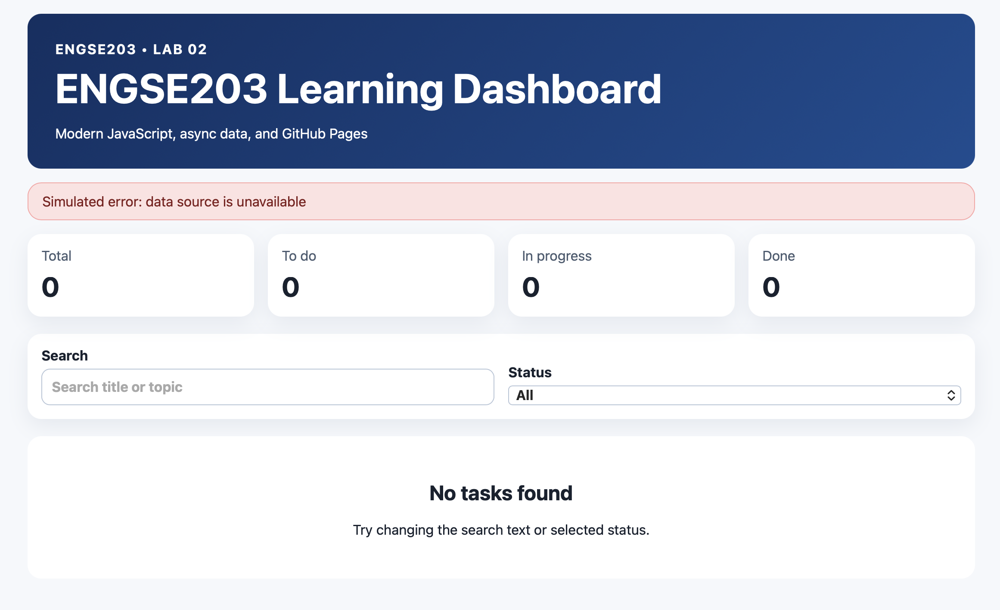
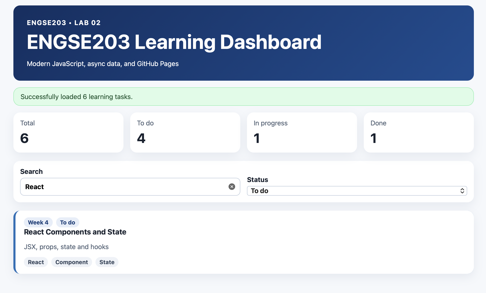
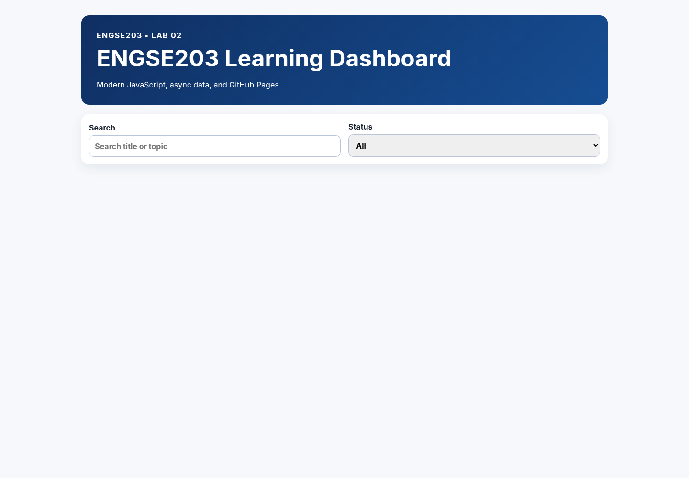
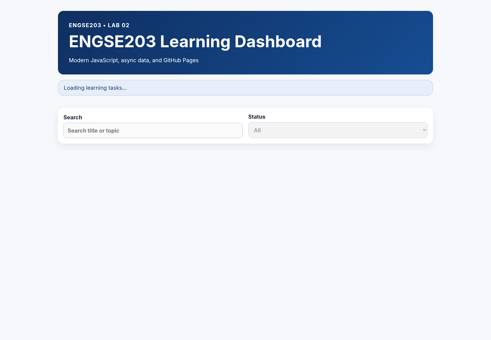
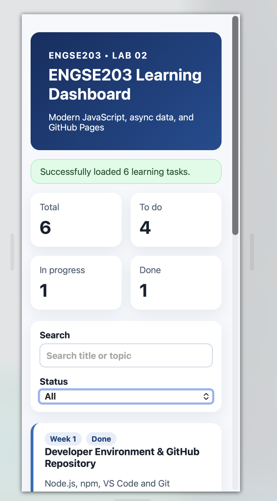
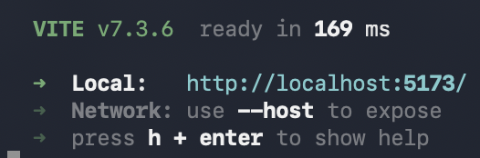
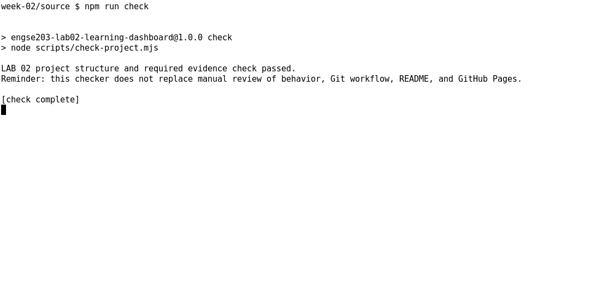
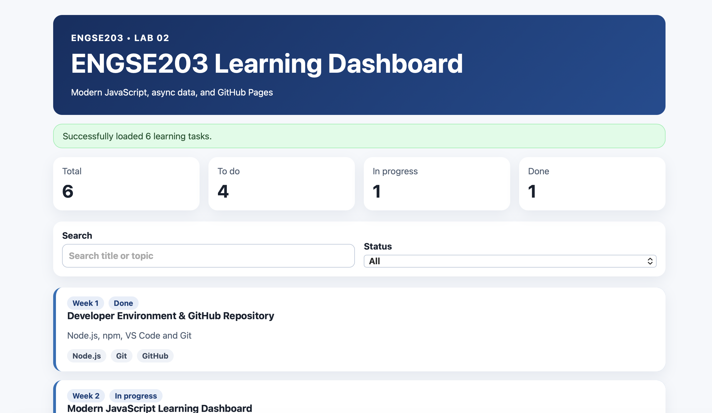

รายละเอียดผลงาน
นำ Vite build output ที่มี index.html เข้า publish/
ผลตรวจ: passVersion:
lab-02-submission-v1ภาพหลักฐาน (8)
















เอกสารและผลการทดสอบ
README.md
# Week 02 Evidence ควรมี screenshots ของ initial/loading/success/error/filter/mobile และผล `npm run check` / `npm run build` ## Initial State  ## Loading State  ## Success State  ## Error State  ## Filter  ## Mobile Responsive  ## npm run check  ## npm run build 
README.md
# ENGSE203 Learning Dashboard
> LAB 02 — Modern JavaScript, Modules & Async Data
## Student Information
* Student ID: `68543210078-0`
* Name: `ปริยากร ธารพรศรี`
* Operating system: `macOS`
* GitHub Pages URL: `<add after deployment>`
## Project Overview
ENGSE203 Learning Dashboard เป็น Web Application ที่พัฒนาด้วย Vite และ Modern JavaScript โดยเน้นการฝึกใช้งาน JavaScript Modules, asynchronous programming และการแยกโครงสร้างโปรแกรมออกเป็นหลาย module เพื่อให้โค้ดอ่านง่ายและดูแลรักษาได้สะดวก
ฟังก์ชันหลักของระบบประกอบด้วย:
* แสดงข้อมูลผ่านหน้า Dashboard
* แยกการทำงานของโปรแกรมออกเป็น JavaScript Modules
* ใช้ `import` และ `export` สำหรับเชื่อมต่อ module ต่าง ๆ
* ใช้ `async/await` สำหรับจัดการข้อมูลแบบ asynchronous
* ใช้ `try/catch` สำหรับจัดการข้อผิดพลาด
* แสดงสถานะปกติและสถานะ Error ของระบบ
* รองรับการจำลอง Error ผ่าน query parameter `?simulateError=1`
## Installation and Run
ติดตั้ง dependencies ของโปรเจกต์:
```bash
npm install
```
ตรวจสอบโครงสร้างและข้อกำหนดของ LAB:
```bash
npm run check
```
เปิด Development Server:
```bash
npm run dev
```
จากนั้นเปิด URL ที่ Vite แสดงใน Terminal เพื่อทดสอบ Web Application
## Build and Preview
Build โปรเจกต์สำหรับใช้งานจริง:
```bash
npm run build
```
ไฟล์ที่ build แล้วจะถูกสร้างไว้ในโฟลเดอร์:
```text
dist/
```
Preview ผลลัพธ์หลัง Build:
```bash
npm run preview
```
สำหรับการ Migration เข้า ENGSE203 Student Labs ใช้คำสั่ง:
```bash
npm run import:publish -- week-02 labs/week-02/source/dist
```
จากนั้นสร้างหน้า GitHub Pages ด้วย:
```bash
npm run build:pages
```
และตรวจสอบ LAB ด้วย:
```bash
npm run verify:lab -- week-02
```
## Test Evidence
### Normal State
ทดสอบการทำงานของ Dashboard ในสถานะปกติ และตรวจสอบว่าข้อมูลสามารถแสดงผลได้อย่างถูกต้อง
* Normal state screenshot: `<add image path or markdown image>`
ตัวอย่าง:
```markdown

```
### Error State
ทดสอบ Error State โดยเพิ่ม:
```text
?simulateError=1
```
ต่อท้าย URL ของ Web Application เพื่อจำลองข้อผิดพลาด และตรวจสอบว่าระบบสามารถจัดการและแสดง Error State ได้อย่างเหมาะสม
* Error state screenshot: `<add image path or markdown image>`
ตัวอย่าง:
```markdown

```
## Problems and Fixes
### Problem 1: Build Output Path
ในขั้นตอน Migration พบว่า LAB 02 ต้องใช้ Vite build output จากโฟลเดอร์ `dist` เพื่อนำเข้าไปยัง `labs/week-02/publish/`
จึงกำหนด `vite.config.js` เป็น:
```javascript
import { defineConfig } from "vite";
export default defineConfig({
base: "./",
build: {
outDir: "dist",
emptyOutDir: true,
},
});
```
การกำหนด:
```javascript
base: "./"
```
ช่วยให้ asset ต่าง ๆ ใช้ relative path ซึ่งเหมาะสำหรับการนำ Web Application ไปใช้งานบน GitHub Pages
ส่วน:
```javascript
outDir: "dist"
```
กำหนดให้ Vite สร้าง production build ไว้ในโฟลเดอร์ `dist`
### Problem 2: node_modules ถูกตรวจพบใน Repository
ระหว่างรัน:
```bash
npm run verify:lab -- week-02
```
พบ Error:
```text
พบไฟล์/โฟลเดอร์ที่ห้าม commit:
labs/week-02/source/node_modules
```
สาเหตุเกิดจาก `npm install` สร้างโฟลเดอร์ `node_modules` ภายใน source ซึ่งไม่ควรถูก commit เข้า Git Repository
แก้ไขโดยลบ `node_modules`:
```bash
rm -rf labs/week-02/source/node_modules
```
และกำหนด `.gitignore` ให้ไม่ติดตาม:
```gitignore
node_modules
dist
```
ไฟล์ `package.json` และ `package-lock.json` ยังคงถูกเก็บไว้ใน Repository เพื่อให้สามารถติดตั้ง dependencies ใหม่ได้ด้วย:
```bash
npm install
```
## References & AI Assistance
* References used:
* ENGSE203 LAB 02 — Modern JavaScript, Modules & Async Data
* ENGSE203 LAB migration instructions
* Vite project configuration and build workflow
* AI assistance used:
* ใช้ ChatGPT ช่วยอธิบายขั้นตอน Migration LAB 02 และลำดับการ Build/Deploy
* ใช้ช่วยวิเคราะห์ปัญหาเกี่ยวกับ `vite.config.js`, `dist`, `publish` และ GitHub Pages
* ใช้ช่วยวิเคราะห์ Error จาก `npm run check` และ `npm run verify:lab`
* นำคำแนะนำมาปรับใช้กับโครงสร้างโปรเจกต์จริง พร้อมตรวจสอบผลลัพธ์ด้วยคำสั่งของ LAB ด้วยตนเอง